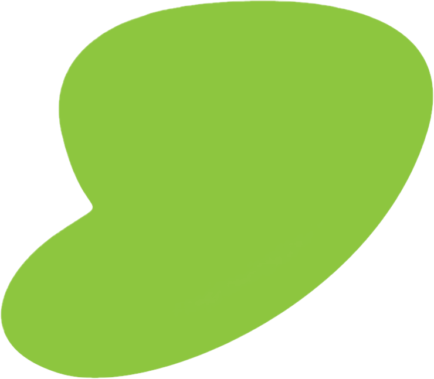
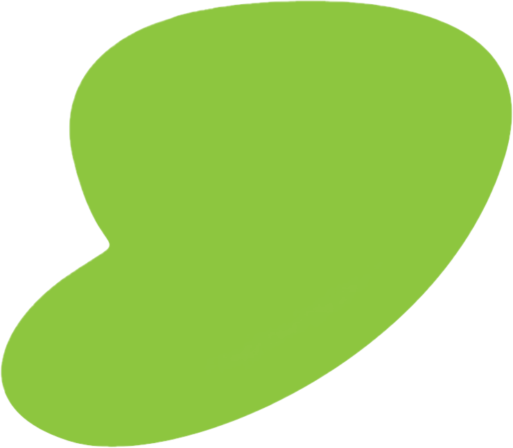

Hi, I'm Sidharth Sunil
I’m a Robotics Graduate with skills in Full-stack Development.
 

I’m a robotics engineer with a passion for full-stack development, constantly seeking new challenges and opportunities to learn. Coding feels like solving puzzles to me,also each project is a new challenge, and I thrive on finding creative solutions. I have experience designing machine learning algorithms for college projects and take a proactive approach to learning and problem-solving. Whether it’s crafting stylish designs or developing innovative tech solutions, I love making things look and work their best. Let’s connect and tackle the next big challenge together!